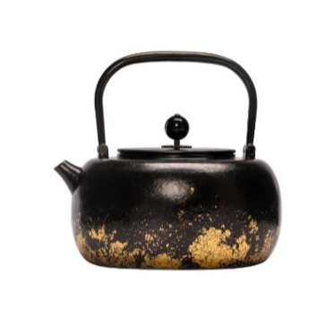
望月
望月鈦提梁壺
如月華流瀉，靜謐圓融。
Titanium Teapots
真空千度重結晶紋理，經典壺器造型，古韻格調美學。各系列提供多款結晶與彩金釉色。

望月
如月華流瀉，靜謐圓融。

小滿
飽滿圓潤，日用雅器。
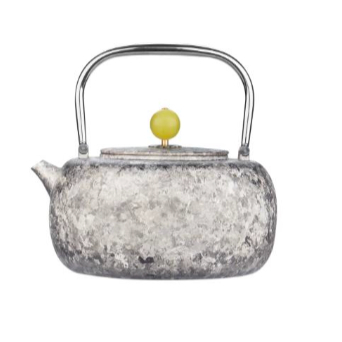
觀山
層巒疊嶂，氣韻沉靜。
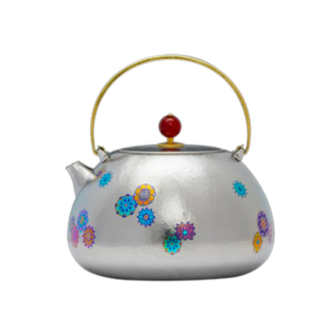
如意
吉意流轉，溫潤大器。
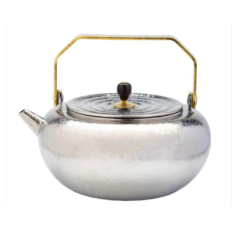
回紋
回紋綿延，古典雋永。

聽泉
側把設計，注水從容。
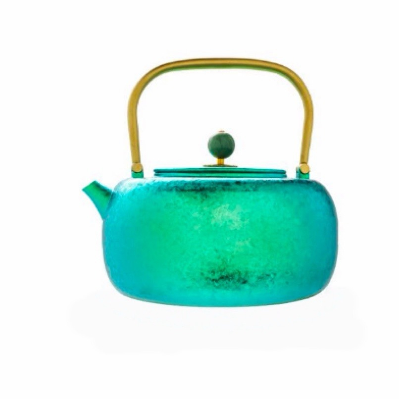
春曉
初曉之氣，清雅明淨。

暗香
暗香浮動，含蓄內斂。
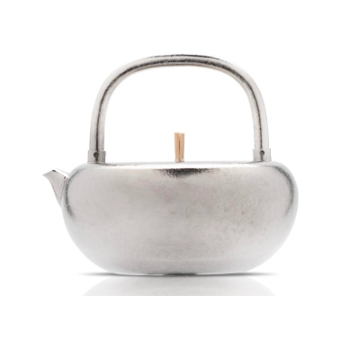
德鐘・新品
德鐘鈦壺 × 八方鈦盒，一壺、一盒、藏天地。
Tea Accessories
從茶盤、寶瓶到茶則、茶寵，以純鈦一貫的細膩工藝，完備一方雅致茶席。
寶相・無相・鎖子紋・饕餮紋
豐富釉色，聚香溫潤
輕巧成套，行旅品茗
蓮瓣造型，取茶入席
細膩濾網，湯色清亮
密封聚香，貯茶如新
案頭雅趣，養器怡情
八方納藏，收貯有度
投茶入壺，順手俐落
承杯穩妥，紋飾典雅
鍛打成形，開餅剪茶
Gallery
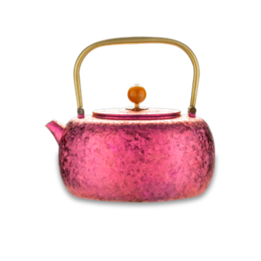
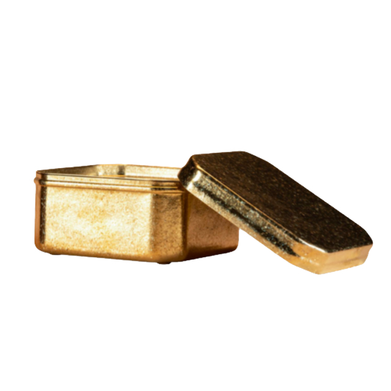
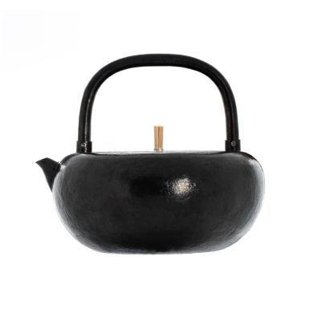
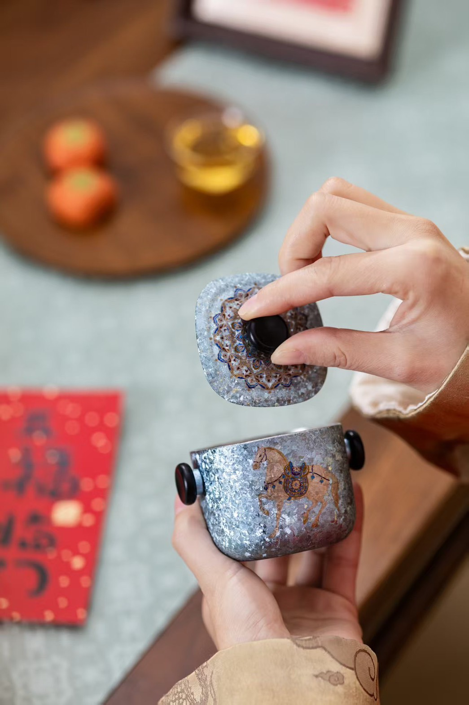
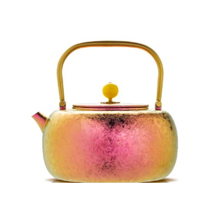
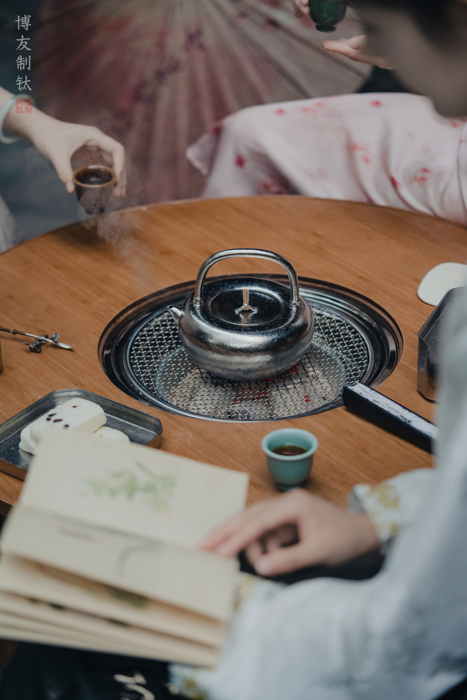
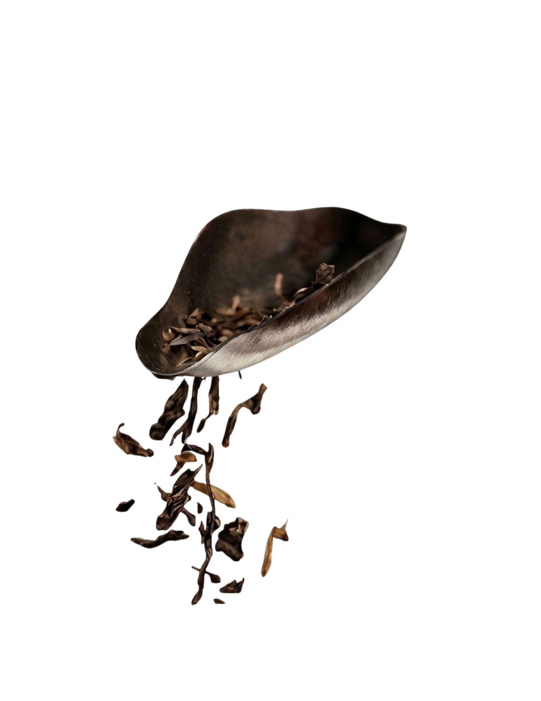
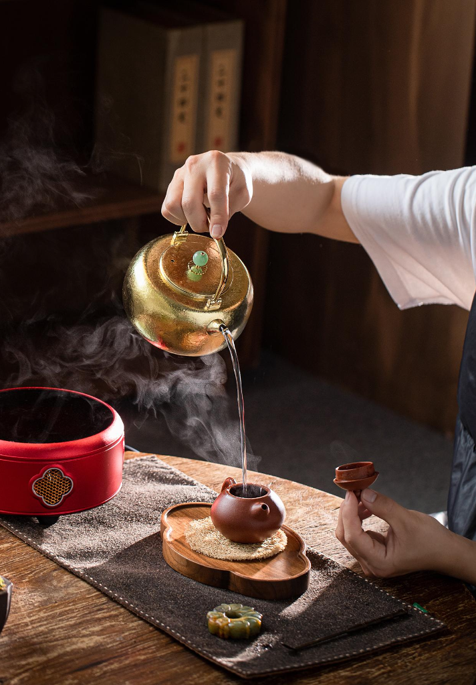